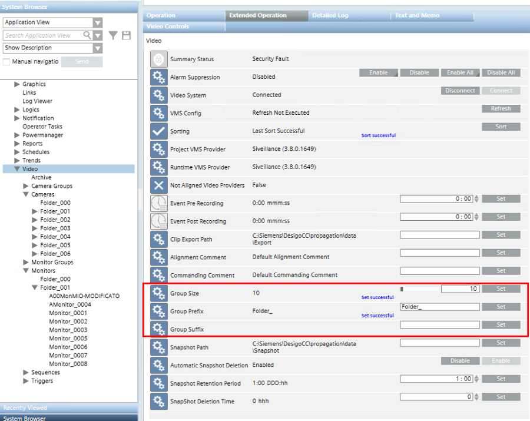

Grouping Video Objects
Video objects (cameras, monitors, triggers, sequences, camera groups, and monitor groups ) can be shown grouped in System Browser to facilitate navigation.
- The default group size is 100, and the default group descriptions are Group_001, Group_002, and so on. Both group size and description can be customized.
- Within the groups, the objects are ordered alphabetically based on the description.
NOTE: For cameras and triggers, the description is acquired from the VMS. For other video objects, the description is configured in the Video Configurator tab. See Video Configurator Reference.

Customize Video Object Groups
You can customize the group size and description as follows:
- System Browser is in Application View.
- In System Browser, select Applications > Video.
- Select the Extended Operation tab.
- To change the Group Size:
a. Enter a number (minimum 3, maximum 500), or drag the bar.
b. Click Set. - The group descriptions are constructed from a sequential number (1, 2, 3, …) with configurable text before and after, as follows:
<prefix>[sequential number]<suffix>. To change the Group Prefix or Group Suffix:
a. Enter the desired text in the field.
b. Click Set. - To make the changes effective, in the Extended Operation tab:
- Next to the Sorting property, click Sort.
- The new group size and descriptions are applied in System Browser.
Changes are not applied to any groups with the Override protection flag set.
NOTE: Only the descriptions can be changed. The group names are fixed, and of the form <object type>_Group_[sequential number]. For example: Cameras_Group_001.
Default ‘Zero’ Group for Newly Added Objects
For each video object type, there is a topmost ‘zero’ group with description <prefix>000<suffix>, that temporarily contains any newly added objects.
- Objects can be moved from the zero group to their appropriate groups by issuing a Sort command.
NOTE: The names of the default groups are fixed, and of the form <object type>_DefaultGroup. For example: Cameras_DefaultGroup.
Update Sorting of Video Objects
After adding, removing, or changing the description of video objects, the distribution / ordering of items in the groups may need to be updated.
- System Browser is in Application View.
- In System Browser, select Applications > Video.
- Select the Extended Operation tab.
- Next to the Sorting property, click Sort.
- The property value changes to
Sort in Progress. When the sort is finished, it changes toLast Sort Successful.
- In System Browser, the video objects are properly rearranged within the groups.

After a tree restructuring due to grouping, some applications (graphics, views, macro/reaction) maintain the links while others need to be checked.